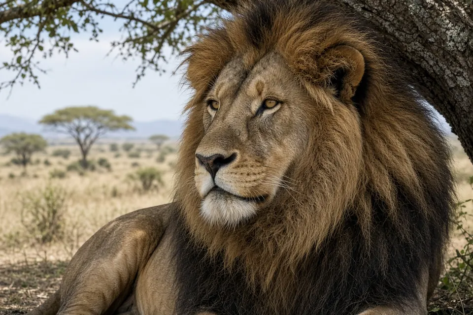

Home › Blog › Why do male lions have manes?
Why do male lions have manes? The mane is a signal, and it has a cost
Male lions have manes mainly as a signal. Long term research in Tanzania's Serengeti found that a darker mane reflects better nutrition and higher testosterone, that lionesses prefer darker maned males, and that rival males pay attention to mane length, which tracks fighting success. The signal is honest because it is costly: big dark manes make males hotter, and in hot places manes are lighter, shorter or almost absent.
The short answer
- Attracting females: lionesses preferred males with darker manes in Serengeti research.
- Warning rivals: mane length signals fighting success, and other males take notice.
- Advertising condition: mane darkness reflects nutrition and testosterone, so it is hard to fake.
- Paying a price: dark, heavy manes raise body surface temperature, which is why manes shrink in hot habitats.
The lion is the only big cat in which adult males and females look so different, and the mane is the reason. For the basics, see our lion appearance guide.
What the Serengeti study found
Peyton West and Craig Packer used data from the long running Serengeti Lion Project in Tanzania and published their results in Science in 2002. They looked at what mane length and mane colour tell other lions, and what a mane costs its owner.
The two features turned out to carry different messages. Mane darkness reflected a male's nutrition and testosterone, and it influenced both female choice and competition between males. Mane length signalled fighting success, but it appeared to matter mainly to other males sizing up a rival, not to females.
Darker maned males did better over a lifetime. The study reported that they had longer reproductive lifespans and higher survival of their offspring. That is a strong reason for a female to choose one, and a strong reason for a rival to think twice before picking a fight.

The cost: a mane is a hot coat
A thick, dark mane around the head and neck traps heat. West and Packer found that maned males were hotter than females, and that dark maned males had higher surface temperatures, more abnormal sperm and lower food intake during the hottest months of the year.
That cost is what keeps the signal honest. Only a male in good condition can carry a big dark mane without suffering too much from it, so the mane works as a reliable advertisement. The study also found that males had lighter or shorter manes in hotter seasons, hotter years and hotter habitats. Because manes respond to temperature in this way, the authors suggested manes may change as the climate warms.
Maneless lions: the Tsavo puzzle
Not every adult male lion has a big mane. Roland Kays and Bruce Patterson described a population in Tsavo National Park, Kenya, that is largely maneless, in the Canadian Journal of Zoology in 2002. Adult males there typically had only sparse blond hair forming a crest along the back, a beard, chest tufts or sideburns. The researchers saw no fully maned lions.
These males were normal members of pride life: they were seen mating, hunting, playing with cubs, scent marking and roaring to advertise territory. The researchers had expected Tsavo's dry, prey poor landscape to produce small groups and weaker sexual selection for manes. Female groups were in fact large, averaging 7.4, so that "small groups, small manes" idea did not hold. One difference stood out: each of the five prides they studied had only one adult male, rather than the coalitions of two to four seen elsewhere. Tsavo is also hot and arid, which fits the Serengeti finding that heat pushes manes to be smaller.
When did lions get manes?
Manes are not as old as lions themselves. In a 2004 review in the Journal of Zoology, Nobuyuki Yamaguchi, Alan Cooper, Lars Werdelin and David Macdonald traced the lion's history from Pliocene east Africa to its spread across Eurasia and the Americas. The first lions were presumed to have been maneless, and maneless forms seem to have persisted in Europe until around 10,000 years ago.
The review suggests the maned form may have appeared about 320,000 to 190,000 years ago and then spread, replacing earlier maneless forms across Africa and western Eurasia. The authors also argue that lions probably became group living before they spread out of Africa. That fits the idea that the mane is tied to social life, where males compete for prides and females choose among them. Read more in why do lions live in prides?
Do female lions ever have manes?
Normally no. A mane develops in males as they mature, and the Serengeti work links mane darkness to testosterone. In the wild, adult lionesses have the plain tawny coat without a mane, and young males start with little or none. Manes are one of several visual signals big cats use; see how big cats communicate for roars, scent marks and other signals.
Key takeaways
- The mane is a signal: darker manes reflect nutrition and testosterone; longer manes reflect fighting success.
- Lionesses preferred darker maned males, which had longer breeding lives and better cub survival.
- Manes are costly: they make males hotter, and manes are lighter or shorter in hot seasons and habitats.
- Some lions, such as many males in Tsavo, Kenya, are almost maneless but still hold prides.
- The maned form probably appeared only a few hundred thousand years ago.
Frequently asked questions
Why do male lions have manes?
Mainly as a signal. Serengeti research found that mane darkness reflects a male's nutrition and testosterone and attracts females, while mane length signals fighting success to rival males.
Does a darker mane mean a stronger lion?
In the Serengeti, darker maned males had longer reproductive lifespans and higher offspring survival, and lionesses preferred them. Darker manes also carried a heat cost.
Why do some male lions have no mane?
Many males in Tsavo National Park, Kenya, are largely maneless, with only sparse hair on the back, chin or chest. Hot conditions are linked to smaller manes, and these males still mate, hunt and hold territory.
Do manes keep lions hot?
Yes. Maned males were hotter than females, and dark maned males had higher surface temperatures and lower food intake in the hottest months.
Cite this page
APA: BigCatWise. (2026, October 15). Why do male lions have manes?. https://bigcatwise.com/blog/why-do-male-lions-have-manes.html
MLA: "Why do male lions have manes?." BigCatWise, 15 Oct. 2026, bigcatwise.com/blog/why-do-male-lions-have-manes.html.
Chicago: BigCatWise. "Why do male lions have manes?." Last modified October 15, 2026. https://bigcatwise.com/blog/why-do-male-lions-have-manes.html.
Please check the date you accessed the page and adjust to your teacher's or journal's style guide.
Sources
- West and Packer (2002) Sexual selection, temperature, and the lion's mane, Science 297(5585): 1339-1343. DOI 10.1126/science.1073257
- Kays and Patterson (2002) Mane variation in African lions and its social correlates, Canadian Journal of Zoology 80(3): 471-478. DOI 10.1139/z02-024
- Yamaguchi, Cooper, Werdelin and Macdonald (2004) Evolution of the mane and group-living in the lion (Panthera leo): a review, Journal of Zoology 263(4): 329-342. DOI 10.1017/S0952836904005242
- IUCN SSC Cat Specialist Group: Lion
Figures are rounded summaries of the sources above. Wild populations are hard to count, so estimates change as new surveys are published.